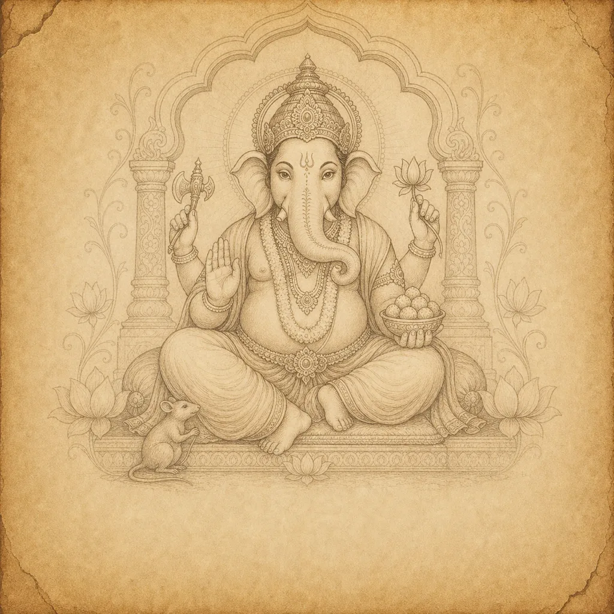
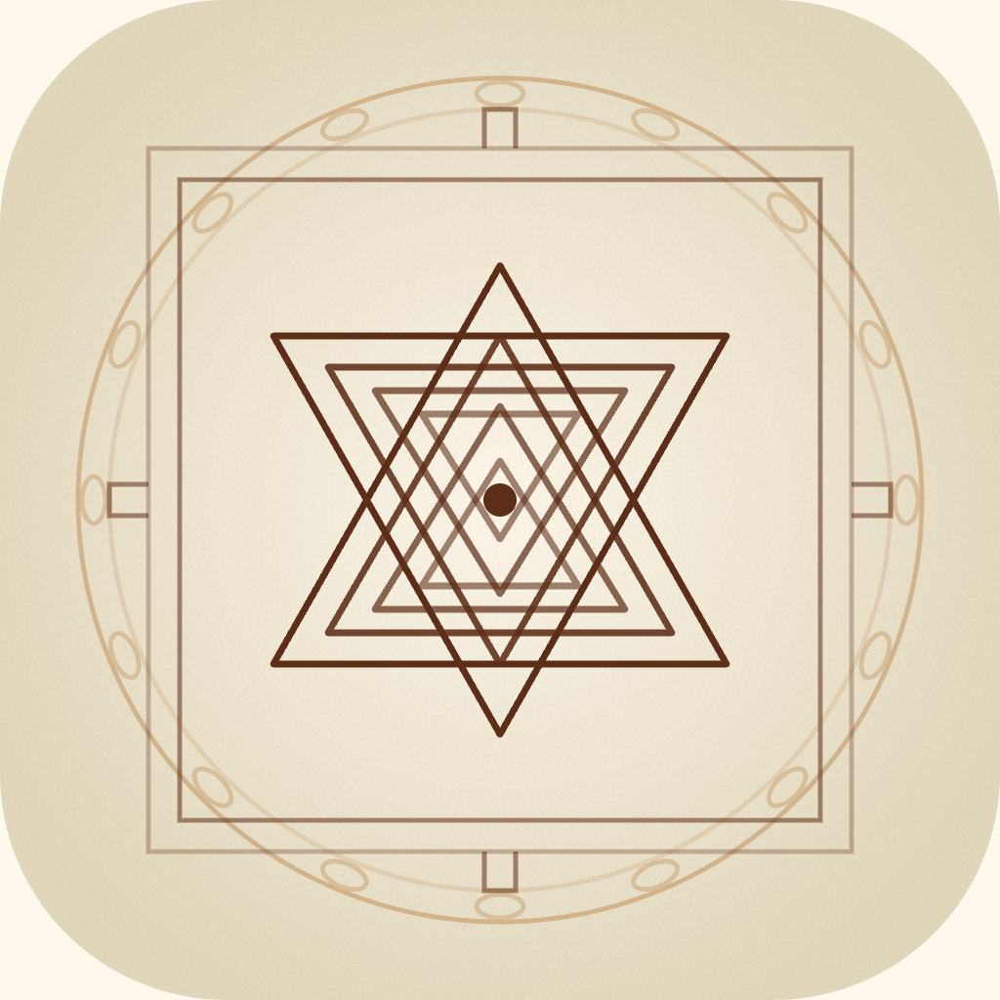

वेदांश़
1/4
अनंत चतुर्दशी · गणेश विसर्जन
· 25 Sept
दस दिन… जैसे कल ही आए थे,
बप्पा।
वेदांश़
2/4
सुबह की आरती अब
किसे सुनाएँगे, बप्पा?
वेदांश़
3/4
रास्ते के लिए…
एक मोदक और।
वेदांश़
4/4
गणपति बप्पा मोरया,
पुढच्या वर्षी लवकर या।
अगले बरस तक — गणेश चालीसा,
स्तोत्र और जप, रोज़ साथ।
Vedansh · Sacred Texts, Daily Reading